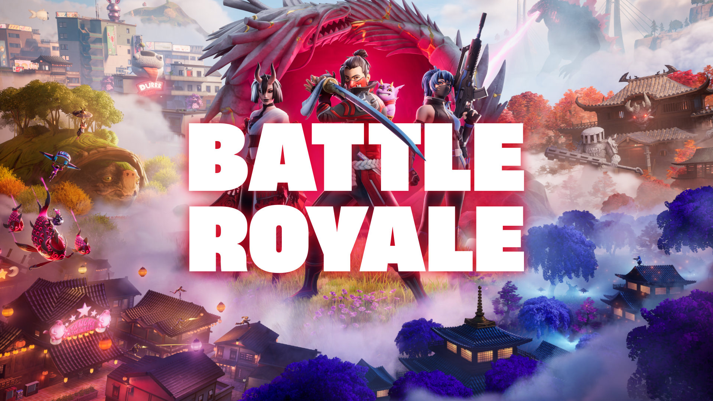

Battle Royale
- Začiatok hry: Hráči začínajú na "lietajúcom autobuse", z ktorého si môžu sami zvoliť, kde na ostrove zoskočia. Strategický výber miesta je kľúčový – niektoré oblasti obsahujú lepší loot (zbrane a vybavenie), ale pritom môžu byť nebezpečnejšie kvôli vysokej aktivite iných hráčov.
- Loot: Po zoskočení musia hráči rýchlo zbierať zbrane, muníciu, liečivá a stavebný materiál. Každý nájdený predmet môže byť kľúčový pre prežitie.
- Stavanie: Jednou z unikátnych čŕt Fortnite je schopnosť stavať. Hráči môžu stavať múry, schody, podlahy a strechy z materiálov, ktoré získavajú ničením objektov v hre. Stavanie slúži ako obranná taktika alebo spôsob, ako získať výhodnú pozíciu v boj
- Zóna V priebehu hry sa herné pole postupne zmenšuje kvôli tzv. Búrke. Hráči musia zostať v bezpečnej zóne, ktorá sa stále zmenšuje, čím núti hráčov stretávať sa bližšie k sebe a zvyšuje intenzitu bojov.
- Posledný nažive: Víťazom sa stáva posledný hráč alebo tím, ktorý prežije = Victory Royale
Rarity zbraní v Battle Royale
| Rarita |
Farba |
Šanca nájdenia |
Špeciálne vlastnosti |
| Common |
Šedá |
Vysoká |
Základná účinnosť |
| Uncommon |
Zelená |
Stredná |
O niečo lepšie štatistiky |
| Rare |
Modrá |
Nižšia |
Vyvážený výkon |
| Epic |
Fialová |
Nízka |
Výrazne lepšia sila |
| Legendary |
Oranžová |
Veľmi nízka |
Najvyššie štatistiky |
Galéria



Kontaktujte nás
Správa bola úspešne odoslaná!